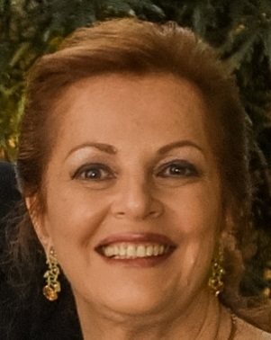

Evelyn Eisenstein
Graduação Ciências Médicas, Especialista em Adolescência, em Pediatria, em Medicina de Adolescente, Mestrado em Endocrinologia (UERJ), Doutorado em Nutrição (UNIFESP).
Professora Associada de Pediatria e Clinica de Adolescentes da Faculdade de Ciências Médicas da Universidade do Estado do Rio de Janeiro, FCM-UERJ, Coordenadora de Telemedicina e do Grupo de Interesse Especial SIG de Crianças e Adolescentes da Rede Universitária de Telemedicina, RUTE, e Diretora do CEIIAS, Centro de Estudos Integrados, Infância, Adolescência e Saúde com o atual Projeto ESSE Mundo Digital, membro do Departamento Cientifico de Adolescência da Sociedade Brasileira de Pediatria, SBP e da SAHM, Society for Adolescent Health and Medicine.